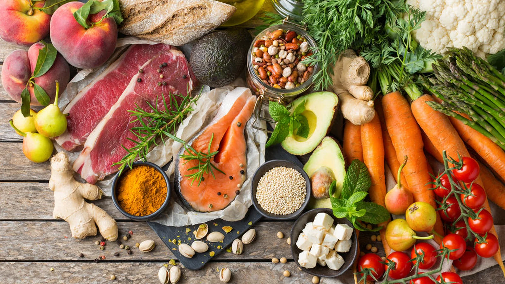

conhecendo os alimentos do natural aos indrustralizados
Os alimentos in natura são obtidos diretamente da natureza e não passam por alterações industriais. Eles preservam nutrientes importantes para o organismo e devem ser a base da alimentação. Exemplos: Frutas Verduras Legumes Ovos Grãos Benefícios: Mais vitaminas e minerais Melhor funcionamento do organismo Auxílio na prevenção de doenças Mais energia e disposição Consumir alimentos frescos diariamente é uma das melhores formas de cuidar da saúde. Sugestão de imagem Feira com frutas, legumes e verduras frescas em cores vibrantes.

